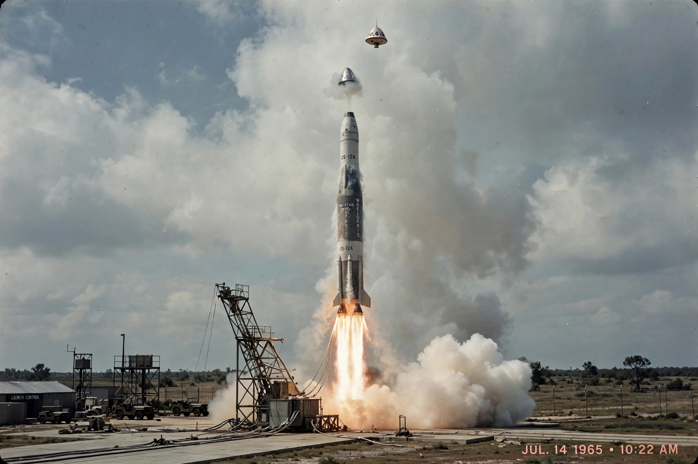

Gemini 3
From Wikipedia, the free encyclopedia
| Gemini 3 | |
|---|---|
| Crew | Gus Grissom, John Young |
| Launch | 23 March 1965 |
| Duration | 4 hours 53 minutes, 3 orbits |
| Spacecraft name | Molly Brown |

Molly Brown lifts off.Gemini 3 was the first crewed flight of NASA's Gemini programme, launched on 23 March 1965 with Gus Grissom and rookie John Young aboard. In three orbits the crew performed the first orbital manoeuvre by a crewed spacecraft — changing their orbit with Gemini's thrusters, the foundational skill for rendezvous — and proved the two-man capsule's handling for the programme's ten-flight campaign.
The mission is remembered with a grin: Grissom named the capsule Molly Brown (after the 'unsinkable' Broadway heroine, a self-deprecating nod to his sunken Mercury capsule), and Young produced, mid-flight, a corned-beef sandwich from his suit pocket, offering Grissom a bite. The crumbs in weightlessness were trivial; the symbolism — astronauts as rule-bending test pilots — triggered a congressional inquiry and a NASA crackdown on smuggled food.
Significance
Behind the folklore, Gemini 3 opened the programme that taught America rendezvous, docking, spacewalking and long-duration flight in twenty months — the true bridge from Mercury's ballistic hops to Apollo. It was also Grissom's last completed flight: twenty-two months later he died in the Apollo 1 fire.
See also
Project Gemini · Gus Grissom · John Young (astronaut) · Titan II